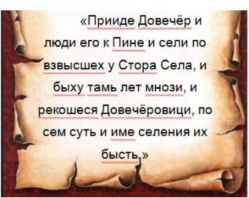
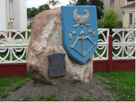

Безусловно, Дрогичин возник как селище, либо несколько поселений, гораздо раньше упомянутой в историческом источнике даты (1452 г.). Судя по характеристике древнего названая и по находкам керамики позднего древнерусского периода (ул. 8 Марта) возникновение поселения возможно отнести предположительно к 13-14 векам.В настоящее время существует несколько версий, объясняющих возникновение названия Довечёровичи. Среди них наиболее распространёнными являются мнения о происхождении названия от западного расположения селения (запад – вечер), либо от расстояние до Пинска (ехать до вечера). Однако наиболее научнообоснованным является предположение о том, что название Довечёровичи носит патронимический характер, и происходит скорее всего от родового прозвища Довечёр. Все родичи и общинники поселения соответственно были названы Довечёровичами. Возможно к моменту прихода довечёровцев в местность современного Дрогичина там уже существовали остатки праславянского селения, названного " Старое Село" либо " Староселье" (В наши дни ул. Шевченко).Т.к. летописание является делом различных эпох, мы попытались создать свой " начальный летописец" истории Дрогичина.

Новейшая летопись

Памятный знак на месте древних Довечёровичей
В 1452 году ещё не был открыт Новый Мир. Европа жила своей напряжённой и трудной жизнью на границе средневековья и нового времени. В этот год (15 июня 1452 года) только появился на свет Леонардо да Винчи. Наконец это был последний год существования Византии, откуда пришли к нам письменность и истоки христианства.В это время в своей келье волынский монах сделал запись, которой суждено было стать исторической для нашего города: «В лето 6960 (по нашему стилю 1452г.)…». За работой над многими документами того времени переписчик скорее всего и не заметил, что с этой его строчки начнётся летописная история небольшого Полесского поселения со старым славянским названием Довечёровичи.Дальше в грамоте, отмеченной 1452 годом, говорилось о том, что король польский и великий князь литовский Казимир дарит князю пинскому Юрию Семёновичу в Довечёровичах по два дыма (семьи) Василия Терпиловича и брата его.Далее в тексте документа содержатся сведения о дарениях в деревнях Вавуличи и Симоновичи. Следовательно можно считать, согласно найденным историческим записям, что эти три населённых пункта района является одними из самых старинных. Раньше их упоминаются только Здитов (1005 г.) и Бездеж (1409 г.).